| |
Создание
регистрации в игре
2.1. Таблица регистрационной
информации
Здравствуйте, дорогой коллега!
На нашем втором с Вами занятии мы рассмотрим тему регистрации
игроков в игре.
Для того, чтоб пользователь мог войти в создаваемый нами
игровой мир, он должен пройти регистрацию на сайте онлайновой
игры. Обычно процедура регистрации
состоит из заполнения десятка обязательных и необязательных полей, где
потенциальный игрок делится с разработчиком информацией о себе и
придумывает имя персонажа (логин), которым впоследствии намеревается играть.
Чтоб сохранить всю эту введенную информацию у нас
в базе, нам, для начала, нужна сама база, посему давайте ее создадим.
Из прошлого ознакомительного занятия Вы уже знаете как
устанавливать пакет Denwer и теперь пришло время приступить к его
использованию.
Мы можем воспользоваться поставляемым вместе с
пакетом Denwer инструментом PHPMyAdmin или задействовать пакет dbForge Studio
for MySQL, который Вы можете скачать с нашего сайта (
http://www.blitz-school.info/dbforge.rar
)
Если Вы решили применить первый способ, то
убедитесь, что после установки пакета Denwer Вы
запустили его ( ярлык Start servers на Вашем рабочем столе) и
скопируйте в адресную строку браузера следующий url: http://localhost/Tools/phpmyadmin/index.php.
После того как запустится PHPMyAdmin,
впишите
название нашей с Вами базы - travgame
в пустое поле под строкой "Create new database"
(что означает - создать новую базу данных
) а в выпадающих списках
кодировки и коннекта к базе выберите cp1251_general_ci. Смотрите рисунок 2.1.1
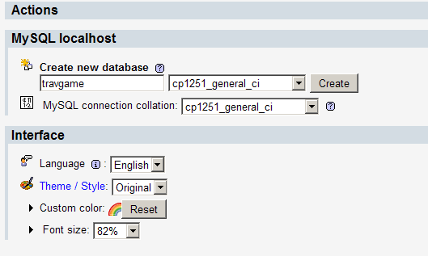
Рисунок
2.1.1
После этих действий Нажмите
кнопку Create (Создать).
В результате этого программа выполнит следующий запрос (см.
рис. 2.1.2)
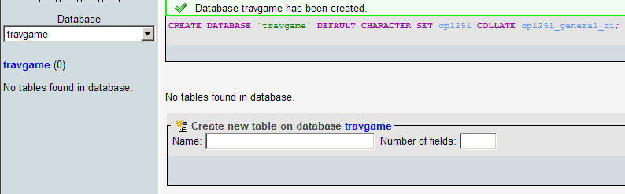
Рисунок
2.1.2
и на диске создастся база данных с названием travgame.
Пока что в этой
базе нет ни одной таблицы (PHPMyAdmin
выдала это сообщение
- No tables found in database). В наших с Вами планах создать в базе
travgame таблицу users,
в которой и будем хранить информацию о всех игроках,
зарегистрировавшихся в нашей онлайновой игре. Мы можем вписать название
таблицы и кол-во прогнозируемых полей, как на рисунке 2.1.3.:
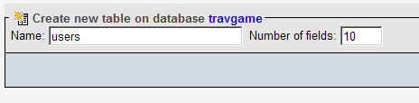
Рисунок
2.1.3
и затем в открывшемся окне ввести названия всех полей их типы
(цифровые, текстовые, даты...), значения
по умолчанию и т.д., но так как это весьма трудоемко, воспользуемся
следующим скриптом (Фрагмент 2.1.1), который мы для Вас заготовили:
Файл с этими строками вы можете найти здесь:
/*Таблица персонажей*/
CREATE TABLE `users` (
usr_id bigint(20) unsigned NOT NULL auto_increment, /*ID игрока*/
nick CHAR(32) UNIQUE, /*ник игрока (уникальный, при регистрации)*/
pass CHAR(32), /*пароль игрока (задается при регистрации)*/
uniq_id varchar(50) NOT NULL default '', /*уникальный идентификатор сессии*/
stat int(1) not null default 0, /*подтверждена регистрация 0/1*/
email CHAR(64), /*почтовый ящик игрока*/
full_name CHAR(50), /*реальное имя игрока*/
regdate timestamp, /*дата регистрации*/
user_gender SMALLINT(1), /*пол игрока и перса*/
gold FLOAT DEFAULT 0, /*золотых монет*/
PRIMARY KEY (`usr_id`)
) ENGINE=MyISAM DEFAULT CHARSET=cp1251;
Фрагмент 2.1.1
Еще раз напомним, что файл travgame.sql с
этими строками вы можете найти здесь.
Теперь в PHPMyAdmin
выберите сверху вкладку SQL
и в открывшееся
окно скопируйте вышеприведенный фрагмент sql-кода.
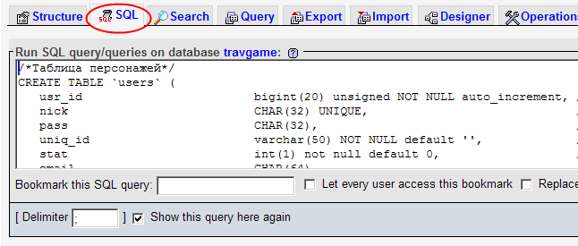
Рисунок 2.1.4
Затем нажмите кнопку "Go". После выполнения sql-скрипта
в нашей, до этого пустой базе travgame
создастся первая
таблица users.
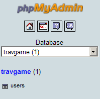
Рисунок 2.1.5
Нажмите на название этой таблицы (кликните мышью на
users) для просмотра ее структуры средствами PHPMyAdmin
и Вы увидите примерно следующее:
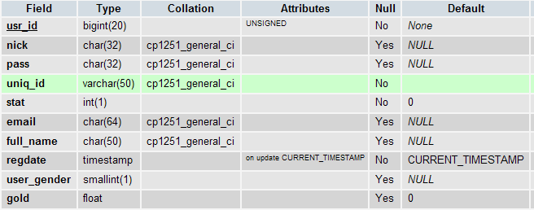
Рисунок 2.1.6
Давайте проделаем те же шаги, но теперь воспользуемся
программой dbForge Studio
for MySQL,
которую Вы уже наверное успели скачать с нашего сайта.
Запустите программу dbForge Studio
for MySQL. После запуска
программы, мы должны
создать соединение с базой, которую мы уже создали чуть ранее. Жмем правой кнопкой на
панели Проводника и выбираем Новое соединение (Рисунок 2.1.7).
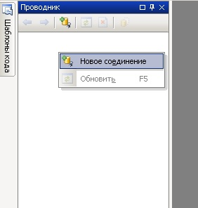
Рисунок 2.1.7
выбираем
из списка Хост: localhost
(если список пуст, вводим localhost
вручную), порт оставляем по умолчанию 3306, имя пользователя вводим root,
а
поле пароля оставляем пустым. Далее из списка База данных выбираем нашу базу
travgame. Лучше убрать галочку с
пункта "Показывать все базы данных", чтоб нам не мешала лишняя
информация.
(Должно быть как на
рисунке 2.1.8)
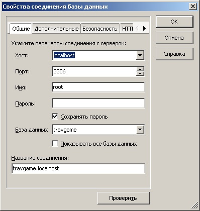
Рисунок 2.1.8
Мы можем нажать кнопку Проверить и программа выведет сообщение -
"Соединение установлено". Значит у нас с Вами все в порядке и можем
смело нажимать кнопку Ok для завершения
создания нашего с Вами соединения с базой
travgame.
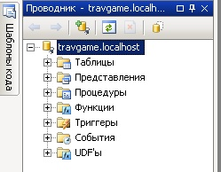
Рисунок 2.1.9
На вышеприведенном рисунке Вы увидите базу
travgame с входящими в нее объектами. Разверните дерево
"Таблицы" и Вы увидите нашу таблицу users,
развернув которую можно будет увидеть, входящие в нее поля:
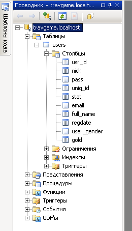
Рисунок 2.1.10
Вы помните, что эту таблицу мы создали еще в PHPMyAdmin, а
Теперь давайте пересоздадим всю базу данных travgame
и
таблицу users, используя
инструмент
выполнения sql-скрипта
в программе dbForge Studio
for MySQL. Для этого загрузите из
папки sql
текущего урока
файл travgame.sql
выбрав пункт меню Файл -> Открыть.
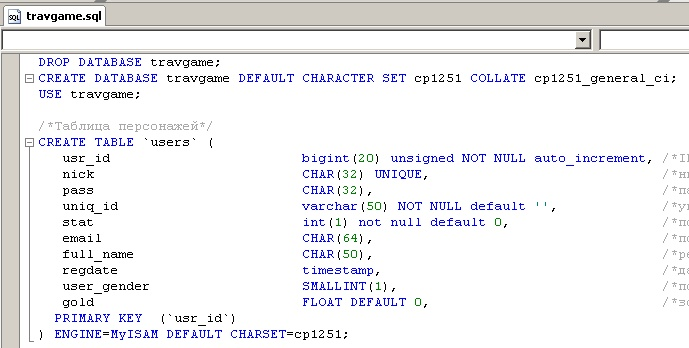
Рисунок 2.1.11
Как Вы можете
видеть, это уже знакомый Вам скрипт создания таблицы users. Однако
первые добавленные три строки:
DROP DATABASE travgame;
CREATE DATABASE travgame DEFAULT CHARACTER SET cp1251 COLLATE cp1251_general_ci;
USE travgame;
Фрагмент 2.2
вначале удаляют базу данных travgame
вместе с
имеющейся в ней таблицей users
а затем, создают
ее снова. Третья строка выбирает уже вновь созданную базу и указывает
дальнейшим операторам sql
на работу
непосредственно с ней.
Для
выполнения скрипта нажмите на пиктограмме восклицательного знака (показано на Рисунке 2.1.12) .
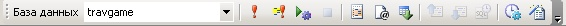
Рисунок 2.1.10
Давайте рассмотрим скрипт создания таблицы регистрационной информации,
который Вы открыли в программе dbForge Studio
for MySQL немного
подробнее (Фрагмент 2.1.3):
DROP DATABASE travgame;
CREATE DATABASE travgame DEFAULT CHARACTER SET cp1251 COLLATE cp1251_general_ci;
USE travgame;
/*Таблица персонажей*/
CREATE TABLE `users` (
usr_id bigint(20) unsigned NOT NULL auto_increment, /*ID игрока*/
nick CHAR(32) UNIQUE, /*ник игрока (уникальный, при регистрации)*/
pass CHAR(32), /*пароль игрока (задается при регистрации)*/
uniq_id varchar(50) NOT NULL default '', /*уникальный идентификатор сессии*/
stat int(1) not null default 0, /*подтверждена регистрация 0/1*/
email CHAR(64), /*почтовый ящик игрока*/
full_name CHAR(50), /*реальное имя игрока*/
regdate timestamp, /*дата регистрации*/
user_gender SMALLINT(1), /*пол игрока и персонажа*/
gold FLOAT DEFAULT 0, /*золотых монет*/
PRIMARY KEY (`usr_id`)
) ENGINE=MyISAM DEFAULT CHARSET=cp1251;
Фрагмент 2.1.3
Как Вы знаете, любая
таблица базы данных mySQL состоит из набора полей. Давайте разберемся, для
чего предназначены поля в нашей с Вами таблице users.
usr_id
- будет хранить
уникальный
идентификационный номер созданного игроком персонажа и автоматом будет
увеличиваться на единицу с каждым новым зарегистрированным
пользователем (о чем свидетельствует ключевое слово
auto_increment), unsigned - значит этот номер не
имеет знака, NOT NULL - не может быть пустым значением (за каждым
игроком обязательно должен быть закреплен идентификатор), bigint(20)
- это поле должно иметь достаточно большую разрядность, ведь игроков
может быть много!
nick
- уникальное поле (чему свидетельство ключевое слово UNIQUE),
в котором будет
храниться логин персонажа. Если при регистрации, игрок введет логин,
который уже есть в таблице users
у
другого ранее зарегистрировавшегося пользователя, то он должен будет
быть предупрежден об этом и выбрать себе другой логин ( nick
)
pass
- пароль пользователя
(для простоты будем
хранить его в таблице в открытом текстовом виде, хотя в реальной, не учебной
базе, можно было бы
применить ну хотя бы простейшее MD5
шифрование
)
uniq_id
- нужно нам для
служебных целей (для хранения сессионной идентификации) и мы
остановимся на этом чуть позже.
stat - это поле хранит значение 0
или 1, понадобится нам для подтверждения регистрации по почте.
email
- почтовый адрес
регистрирующегося юзера.
full_name
- ФИО игрока
regdate
- на всякий случай запомним. когда зарегистрировался игрок
user_gender
- пол игрока (может тоже оказаться полезным знать).
gold - золотой запас игрока
(возможно понадобится, если игрок намерен вводить реальные деньги в
нашу с Вами игру).
Если кто не особо знаком с базой MySQL
то
заметим, что тип таблиц для нашего клуба мы выбрали MyISAM. MyISAM
– это стандартный тип таблиц в MySQL. Он основывается на коде ISAM
и обладает в сравнении с ним большим количеством полезных дополнений.
MyISAM-таблицы идеально оптимизированы для использования в WWW, где
преобладают запросы на чтение. Таблицы типа MyISAM показывают хорошие
результаты при выборках SELECT. Во многом это связано с отсутствием
поддержки транзакций и внешних ключей.
Если
вы теперь загляните в папку C:\WebServers\usr\local\mysql-5.1\data\travgame
то увидите, что там появились несколько файлов:
Индексные
файлы имеют расширение .MYI (MYIndex). Файлы с расширением .MYD
(MYData) содержат данные, а с расширением .frm – схему
таблицы. Если индексный файл по какой-то причине теряется, программа
перестраивает индексы, используя информацию из frm-файла. Пока что у
нас создались файлы:
users.frm,
users.MYD, users.MYI и db.opt (хранит
кодировку базы).
users.frm
- содержит
только голую структуру таблицы, поскольку мы не ввели в него никаких
данных и ни один пользователь не зарегистрировался в нашей с Вами игре.
Да и как он может зарегистрироваться, если у нас до сих пор нет формы
регистрации! Что ж, пора исправлять эту несправедливость и переходить к
следующему разделу нашего урока
2.2. Форма ввода данных
пользователя
Форма
ввода данных пользователя - это дверь, через которую игрок попадает во
вселенную нашего игрового мира. Все данные которые, он честно введет в
соответствующие поля ввода на странице браузера в регистрационной
анкете попадут в нашу таблицу users
и
будет затем использоваться для авторизации пользователя в
игре.
Итак для создания анкеты для регистрации игрока, создадим пустой
файл с расширением
.php. Давайте назовем его
regank.php
(Типа - регистрационная анкета). Вы можете
пользоваться любым удобным для
Вас редактором HTML (FrontPage,
DreamWeaver )
или просто набирать код страницы вручную в текстовом редакторе
(блокноте или какого-то файлового менеджера,
Far Manager, например). Возможно Вам будет
удобно воспользоваться более профессиональными программами -
Zend Studio, к
примеру.
Итак, нам понадобится HTML форма и таблица.
Таблица для удобного размещения элементов ввода (логин,
пароль и т.д.) а форма - для ее отправки со всеми заполненными
данными в нашу таблицу mySQL - users.
Так, если Вы создаете эту форму вручную, начальный фрагмент кода с формой,
таблицей и текстовыми полями для ввода логина
и пароля пользователя будет выглядеть так:
<form name="registerForm" action="regank.php" method="post">
<p class="desc">
<table cellpadding="3" cellspacing="0" id="logindata">
<td><label>Имя игрока</label></td>
<td><input type='text' name='name' class="startinput" size='30'></td>
</tr>
<tr>
<td><label>Пароль</label></td>
<td><input type='password' name='pass' class="startinput" size='30'></td>
</tr>
Фрагмент 2.2.1
Если вы решили воспользоваться визуальным редактором (к примеру
FrontPage) то можно легко, в режиме проектирования создать такую форму,
а HTML-код за вас создаст сам редактор.
Какие же поля, нам нужно создать для заполнения пользователем! Кроме
уже вышеперечисленных Логина и Пароля, которые называются name
и pass
соответственно (name='name' и
name='pass', type='password'
для ввода пароля говорит о том, что данные при вводе в нем
отображаются в виде звездочек ) нам понадобятся поля для ввода e-mail,
цифрового кода подтверждения и галочки, что игрок принимает Основные
положения игры:
<tr>
<td><label>e-mail</label></td>
<td><input type='text' name='email' class="startinput" size='30'></td>
</tr>
<tr>
<td><img src="img/capcha.php?sid=<? echo $_SESSION['uid'] ?>"></td>
<td><input name="sid" class="startinput" type="text" size="30" value=""></td>
</tr>
<tr>
<td></td>
<td ><input type=checkbox name="agb"><label>Я принимаю Основные Положения игры Travgame.</label></td>
</tr>
<tr>
<td></td>
<td></td>
</tr>
</table>
Фрагмент 2.2.2
С текстовым полем ввода почтового адреса (name='email') и галочки /
checkbox (name="agb")
все ясно, а вот в строках Фрагмента 6 и 7 Вы можете видеть
элемент картинки (<img>)
который создается скриптом capcha.php на основании
переданного в этот скрипт параметра sid, который
устанавливается как одна из переменных сессии, а именно
$_SESSION['uid']. Откуда же это
все берется?
Очень часто при написании скриптов на php необходимо хранить
некоторую информацию о посетителе в течение всего сеанса его работы.
Типичным примером такой ситуации является необходимость "помнить"
логин и пароль пользователя при его нахождении в закрытой части
сайта (например - непосредственно в нашей с Вами игре). Собственного
говоря, именно для этого и существует механизм сессий, реализованный
в php, однако давайте все по порядку. Для того, чтобы в скрипте
(т.е. в нашем скриптовом файле регистрации
regank.php) можно было работать с сессиями, необходимо
сначала инициализировать механизм сессий. Делается это с помощью
функции session_start(). При этом будет создана новая сессия или
восстановлена уже существующая. Вот
как это реализовано в нашем файле regank.php:
<?php
session_start();
@include("config.inc.php");
@include("functions.inc.php");
//Необходимо подключиться к БД
$link = mysql_connect($DBSERVER, $DBUSER, $DBPASS)
or die("Не могу подключиться" );
// сделать $DB текущей базой данных
mysql_select_db($DB, $link) or die ('Не могу выбрать БД');
if($_SESSION['uid'] =='') { $_SESSION['uid'] = mt_rand(100000,999999); }
?>
Фрагмент 2.2.3В этом фрагменте нас пока интересуют строки 2 и 12.
В строке 2 мы запускаем стандартную функцию в PHP
session_start() описанную Выше. А в строке 12 при помощи
опять же стандартной функции mt_rand генерируем случайное число
состоящее из 6 цифр для нашей картинки и засовываем его в массив $_SESSION
под именем uid (если это не было сделано ранее). Теперь Вам должно
быть понятна строка 6 из фрагмента 2.2.2. Однако не до конца! Ведь
мы еще не рассмотрели скрипт capcha.php, который на основании
этой переменной сессии, собственно и формирует графическое
представление картинки. Тогда давайте рассмотрим его:
<?php
//Запускаем или восстанавливаем сессию
session_start();
//Создаем изображение из 3-х возможных подложек
$im=ImageCreateFromJpeg(round(mt_rand(1,3)).".jpg");
//Генерируем цвет надписи
$color=ImageColorAllocate($im,mt_rand(0,255),mt_rand(0,255),mt_rand(0,255));
//Формируем надпись, используя шрифт
ImageTtfText($im, 23, mt_rand(-5,5), 3, 30, $color, "addict.ttf", $_SESSION['uid']);
//Указываем тип содержимого
Header("Content-type: image/jpeg");
//Создаем и выводим изображение
ImageJpeg($im);
//Разрушаем изображение
ImageDestroy($im);
?>
Фрагмент 2.2.4Как Вы догадались этот фрагмент находится в
отдельном файле (у нас он даже лежит в отдельной папке
img). Все
вызываемые в нем функции, входят в
стандартную графическую библиотеку PHP. В
строке 5 мы создаем подложку под нашу картинку. Для этого будем
использовать три разные картинки в формате
.jpg. Вот эти картинки:
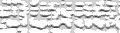
Они имеют названия 1.jpg, 2.jpg, 3.jpg и
выпадают случайным образом при обновлении страницы регистрации (regank.php)
благодаря функции mt_rand(1,3). В строке 7 мы также случайно
создаем цвет цифр, которые будут видны на подложке (иногда цвет
выпадает неудачно и цифры очень трудно разобрать - тогда лучше
обновить страницу регистрации). В 9 строке на подложке рисуются сами
цифры, взятые из переменной сессии. В 11 строке мы указываем
браузеру как трактовать данные полученные от скрипта capcha.php,
а именно как картинку формата jpeg. В 13 строке функция
ImageJpeg формирует все это изображение
целиком и в завершающей строке его лучше убрать, чтоб не засоряло
память. В результате работы этого скрипта в регистрационной анкете
отобразится картинка с подложкой и цифрами, например такая:
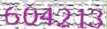
Конечно, цифры зависят от того, какое случайное число у нас будет в
$_SESSION['uid'].
С этим закончили и теперь у нас в регистрационной анкете есть поля
для ввода логина, пароля, e-mail, цифр с
картинки и галочка соглашения с правилами игры.
Теперь нам нужна кнопка, нажав на которую, игрок предпримет
попытку регистрации.
Вот, собственно, эта кнопка:
<input type="submit" name="do" class="button" value="Регистрация" />
Фрагмент 2.2.5На рисунке 2.2.1 Вы видите, что у нас с Вами получилось:
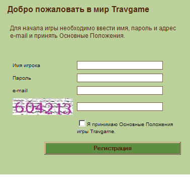
Рисунок 2.2.1
Кнопка Регистрация имеет тип submit и
поэтому сразу отправляет нашу форму с данными на сервер (это весьма
условно, так как сервер у нас с Вами находится на той же машине, где
выполняется и клиентская часть - т.е. наша страничка в браузере).
Собственно проверку введенной пользователем информации проверяет тот
же скрипт -
regank.php (так как из
Фрагмента 2.2.1 вы помните, что у формы action="regank.php").
Безусловно, то что мы с Вами
сделали - это только первая часть механизма регистрации. С помощью
такой страницы игрок сможет лишь заполнить необходимые поля и не более того. Поэтому необходимо
научиться сохранять введенные пользователем данные в нашу таблицу users,
которую Вы создали в пункте 2.1 текущего Занятия.
2.3. Проверка данных регистрации на
сервере
Особо не мудрствуя по этому поводу, мы сделаем три проверки:
1. Не существует ли уже в таблице
users игрок с введенным логином?
2. Не забыл ли пользователь ввести пароль в регистрационной анкете?
3. Не ошибся ли он при вводе цифрового кода подтверждения?
<?php
// данные отправлены
if($_POST['do'] !='') {
//Начинаем проверять входящие данные
if($_POST['sid'] == $_SESSION['uid']) {
//Создаем запрос к базе для проверки существования Пользователя
$name = $_POST['name'];
mysql_query("SELECT * FROM users WHERE nick='".strtolower($name)."'");
//Проверка результата запроса
if(mysql_affected_rows()==0) {
//Проверка ввведенных паролей
if( $_POST['pass'] !='' ){
//Осуществляем регистрацию
$uniq_id = md5($_SERVER['REMOTE_ADDR'].$_SERVER['HTTP_USER_AGENT'].mktime());
$pass = $_POST['pass'];
$email = $_POST['email'];
//Создаем запрос для записи данных в БД
$query = "INSERT INTO users (nick,pass,email,regdate,uniq_id) VALUES('".strtolower($name)."','$pass','$email', Now(), '$uniq_id')";
$r = mysql_query($query,$link) or die("Query failed : " . mysql_error());
if($r) {
echo 'Регистрация завершена успешно!';
}
}
} else { echo 'Регистрация невозможна: Введенный пароль пустой <br><a href="regank.php"/>назад</a>';}
} else { echo 'Регистрация невозможна: Пользователь с таким именем уже существует<br/><a href="regank.php"/>назад</a>';}
session_destroy();
} else { echo 'Регистрация невозможна: Код подтверждения введен не верно<br/><a href="regank.php"/>назад</a>';}
?>
Фрагмент 2.3.1
В строке 3 вышеприведенного фрагмента мы проверяем на
существование переданную методом POST (те
есть произошел формы) переменной
do. Это не что иное, как нажатая
кнопка Регистрация. Если эта переменная существует, значит была
предпринята регистрация и мы можем проверить еще пару переданных
переменных. В строке 5 производится сверка ввода цифрового кода и
сессионной переменной, из которой собственно и создана картинка
этого цифрового кода. Если пользователь ошибся с вводом цифрового
кода, то мы выведем соответствующее сообщение которое Вы можете
увидеть в строке 35 фрагмента. В том случае, если игрок ввел
цифровой код корректно в строках с 8-12 мы проверяем, присутствует
ли в таблице users такой логин и если да,
выведем в строке 32 сообщение об ошибке. Стандартная функция
PHP для работы с базой данных
mySQL mysql_affected_rows()
возвращает число строк, которое затрагивает
sql-запрос из 9 строки фрагмента (этот
запрос выбирает из таблицы
users все строки, у которых поле
логина (nick)
равно введенному пользователем при регистрации). Если это число
равно нулю, то мы можем зарегистрировать нового игрока (все условия
выполнены!) , что мы и делаем в строках 22-23, выполняя
sql-запрос insert (вставка)
введенных в форме данных в новую строку в таблице
users. Так в нашей игре появился новый пользователь!
Хорошо, скажете Вы, а как мы вообще подключились к базе данных
travgame? И будете совершенно
правы! Давайте вернемся к строкам 4-10 Фрагмента 2.2.3. Именно здесь
функция PHP mysql_connect()
проверяет возможность и осуществляет подключение к нашей базе
travgame. А параметры для
подключения она берет из файла config.inc.php, который подключается
к файлу regank.php пр помощи директивы
include.
Что же содержится в файле config.inc.php? А находятся в
нем следующие строки:
<?
//Данные для работы с MySQL
//Сервер
$DBSERVER = "localhost";
//Пользователь и пароль
$DBUSER = "root";
$DBPASS = "";
//База данных
$DB = "travgame";
?>
Фрагмент 2.3.2Как Вы видите, здесь происходит простая
инициализация переменных. localhost - это
имя нашего сервера (помните, Вы его еще прописывали в dbForge Studio
for MySQL). root - наш пользователь
базы данных travgame (он создался
автоматически еще когда Вы создавали базу данных в PHPMyAdmin
). Ну и travgame - имя нашей
базы данных. Все эти уже инициализированные переменные ($DBSERVER,$DBUSER,$DBPASS
и $DB) передаются в функцию
mysql_connect()
для подключения к базе mySQL.
2.4. Сохранение данных на сервере
В предыдущем пункте нашего урока мы
вскользь рассмотрели сохранение введенной информации в базу данных.
Давайте остановимся на этом чуть подробнее. Как Вы помните, для
регистрации игрок заполняет на странице регистрации поля формы и
нажимает кнопку Регистрация. Если Вы внимательно посмотрите на
фрагменты 2.2.1, 2.2.2, и 2.2.5, то увидите, что все поля, которые
заполняет игрок имеют имена (ключевое слово
name в HTML
)
1. Поле ввода логина name='name'
2. Поле ввода пароля name='pass'
3. Поле для ввода электронного адреса name='email'
и т.д.
Механизм приема данных из этих полей посредством языка
PHP сводится к проверке специального
служебного массива $_POST, который
содержит все эти данные. Таким образом, чтоб узнать какой логин,
ввел игрок при регистрации, нужно обратиться к этому массиву
следующим образом:
$_POST["name"] а, чтоб узнать пароль
- конечно же $_POST["pass"] и т.д.
Таким образом становится понятным, что имя элемента массива $_POST
соответствует имени элемента заполняемой формы страницы в браузере
пользователя!
$pass = $_POST['pass'];
$email = $_POST['email'];
//Создаем запрос для записи данных в БД
$query = "INSERT INTO users (nick,pass,email,regdate,uniq_id) VALUES('".strtolower($name)."','$pass','$email', Now(), '$uniq_id')";
$r = mysql_query($query,$link) or die("Query failed : " . mysql_error());
Фрагмент 2.4.1
Перед использованием в строке запроса INSERT
мы просто для наглядности присвоили значения из массива
$_POST переменным $name, $pass, $email и
т.д.
Что касается SQL-запроса на вставку данных
в таблицу, то он имеет следующий формат "INSERT
INTO (имена столбцов через запятую)
VALUES (имена значений через запятую
)". Тут все понятно, единственное для
заполнения поля regdate (это дата регистрации игрока в игре) мы
используем стандартную PHP функцию Now(),
возвращающую текущую дату сервера.
У Вас может еще возникнуть вопрос, как формируется значение в
переменной $uniq_id и для чего ее
значение засовывать в поле uniq_id таблицы
users.
Вообще-то это поле нам понадобится в дальнейшем при
авторизации игрока в игре. А форсируется она, как Вы видели в
фрагменте 2.3.1 следующим образом:
$uniq_id = md5($_SERVER['REMOTE_ADDR'].$_SERVER['HTTP_USER_AGENT'].mktime());
Фрагмент 2.4.2Служебный массив в PHP $_SERVER
хранит много интересной и полезной информации. В частности $_SERVER['REMOTE_ADDR']
- это IP адрес, с которого заходит
регистрирующийся игрок. А $_SERVER['HTTP_USER_AGENT'] - это
строка, которую передает браузер и в которой есть данные о его
версии, типе и т.д. Ну а функция mktime() возвращает текущее время
сервера. Что касается функции md5 то она занимается тем, что создает
так называемый хэш строки. Таким образом мы заботимся об
уникальности этого значения, что впоследствии пригодится нам для
проверки авторизации игрока в игре, но об этом уже речь пойдет в
нашем следующем уроке, а также подтверждения регистрации!
2.5. Подтверждение регистрации по почте
Для того, чтоб немного защитить нашу игру от
нежелательных регистраций мы также сделаем механизм отправки писем с
подтверждением регистрации на email
пользователей.
Но в связи с тем, что у нас учебный сервер Denwer,
а не реальный на хостинге какого-нибудь провайдера
мы поступим следующим образом. В состав
Denwer входит отладочный эмулятор отправки писем, который
называется sendmail.exe. В
действительности копии этой программы несколько раз попадаются в
папках с Denwer, но мы будем использовать
эту копию:
c:\Webservers\usr\sbin\sendmail.exe
(Если Вы не изменяли пути при установке пакета, то именно
здесь Вы и найдете эту программу) . Сейчас
нам нужно будет сделать небольшие изменения в файле
php.ini который размещен здесь:
c:\Webservers\usr\local\php5\
Откройте файл php.ini в блокноте
или любой другой удобной для Вас программой и произведите следующие
изменения.
Найдите строки
; For Unix only. You may supply arguments as well (default: "sendmail
-t -i").
sendmail_path = \usr\sbin\sendmail -t -i
и измените вторую строку на
sendmail_path = c:\Webservers\usr\sbin\sendmail -t -i
После этого обязательно перезагрузите сервер (ярлычки
Denwer на рабочем столе)
Теперь все письма, которые будут отправляться из файлов
.php будут накапливаться здесь:
C:\WebServers\tmp\!sendmail
или их можно будет просмотреть посредством специального скрипта:
http://localhost/tests/sendmail/index.php
который есть в поставке пакета Denwer.
Отлично! Нам остается немного изменить фрагмент 2.3.1 и
сделать в нем отправку писем о подтверждении регистрации на
e-mail игроков. Конечно же они не будут
никуда уходить, но зато станут накапливаться в
C:\WebServers\tmp\!sendmail , что для учебных целей нам вполне
подойдет.
Итак, добавим в фрагмент 2.3.1 после строки 24 следующие строки:
// Для отправки e-mail в виде HTML устанавливаем необходимый mime-тип и кодировку
$headers = 'MIME-Version: 1.0' . "\r\n";
$headers .= 'Content-type: text/html; charset=windows-1251' . "\r\n";
// Откуда пришло
$headers .= 'From: Travgame <game@travgame.org>'."\r\n";
//Здесь укажите электронный адрес, куда будут уходить сообщения
$subject = "Подтверждение регистрaции на сайте";
$message = 'Для активации аккаунта пройдите по следующей ссылке
<a href="http://travgame/regank.php?activation='.$uniq_id.'" target="_blank">http://travgame/regank.php?activation='.$uniq_id.'</a>';
$message .= 'или скопируйте ссылку в окно ввода адреса браузера и нажмите enter.';
//Отправляем сообщение
if(sendmail($email,$subject,$message,$headers) !== FALSE) {
echo 'Регистрация завершена, код активации отправлен Вам на электронный адрес!';
}
Фрагмент 2.5.1
Здесь мы создаем переменную $headers, которую инициализируем по
правилам электронной почты, формирую ее как заголовок почтового
сообщения с указанием кодировки, адреса отправителя. $subject - это
тема письма, а $message - тело письма в котором мы прописываем
ссылку для подтверждения регистрации. Тело письма со ссылкой может
выглядеть примерно так:
Для активации аккаунта пройдите по следующей ссылке <a href="http://travgame/regank.php?activation=d7a984b1514b187df1262dd77ae51725"
target="_blank">http://travgame/regank.php?activation=d7a984b1514b187df1262dd77ae51725</a>или
скопируйте ссылку в окно ввода адреса браузера и нажмите enter.
В конце, функция отправки почты sendmail(),
которую Вы можете найти в подключаемом файле functions.inc.php, отправляет
письмо игроку.
Что ж, письмо отправлено, и нам нужно сделать механизм подтверждения
регистрации. Для этого добавим в наш многострадальный файл
regank.php такие строки:
//Фрагмент отвечающий за активацию аккаунта
if($_GET['activation'] AND $_GET['activation']!='') {
$uniq_id = $_GET['activation'];
//Создаем запрос
$r=@mysql_query("UPDATE users SET stat=1 WHERE uniq_id='".$uniq_id."' AND stat=0");
if($r) {
if( mysql_affected_rows() != 0) {
echo '<h2>Ваша учетная запись активирована.</h2><br/> Теперь вы можете <a href="index.php">войти на сайт</a> используя данные
указанные при регистрации';
} else { echo 'Непредвиденная ошибка!'; }
} else { echo 'Ошибка активации!'; }
}
Фрагмент 2.5.2
Здесь все просто, мы проверяем переданную строку активации
методом GET, т.е. $_GET['activation'] и
ищем в таблице users поле uniq_id с таким
значением, если находим, присваиваем полю stat в этой найденной
строке число 1, это означает, что регистрация успешно подтверждена.
Все созданные в нашем занятии скрипты и картинки Вы можете найти
здесь.
В следующем уроке мы с Вами создадим карту
поселков нашей стратегической игры в псевдо-изометрической проекции, научимся производить ее скроллинг, для того, чтоб видеть
всех соседей, создаваемого нами игрового мира.
|
|


 Перечень курсов
Перечень курсов

 Регистрация
Регистрация